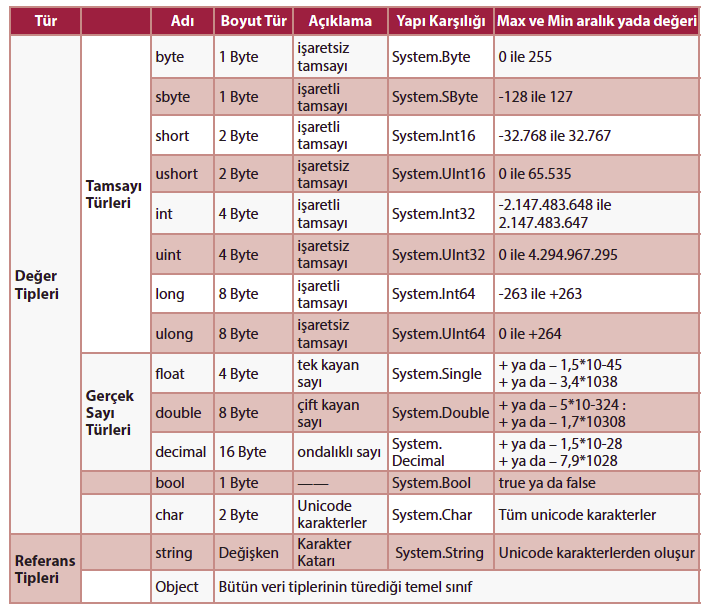
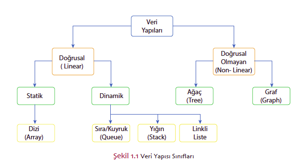

Veri,
bir nesne hakkındaki tüm niteliksel ve niceliksel değişkenliklerin sayısal değeridir.
Bilgisayar verileri ise bilgisayar tarafından işlenen ve saklanan ses, video, metin, resim gibi çeşitli türlerdeki verilerdir
Veriler tek başlarına anlam ifade etmezler. Bu halleriyle bilginin ham maddesi olarak görülmektedir. Veri sınıflandırılır, çeşitli süreçlere tabi tutularak işlenir ve bilgi seviyesine ulaşır.
Veri yapısı
ise bilgisayardaki dijital verileri depolamanın ve bu veriler üzerinde farklı eylemleri gerçekleştirmenin en kolay yolunu sağlayan bir veri ögeleri grubudur.
Veri yapısı, bir bilgisayardaki verileri etkin bir şekilde kullanılabilecek şekilde düzenlemenin özel bir yoludur.
Çeşitli veri yapıları türleri olarak: ağaç (tree) yapıları, yığınlar (stack), diziler (array), kuyruklar (queues), listeler vb. örnek gösterilebilir.
Veri yapısı kullanmadaki amaç, farklı görevlerin uzay ve zaman karmaşıklığını azaltmaktır.
Veri türü,
derleyiciye veya yorumlayıcıya programcının verileri nasıl kullanmayı planladığını söyleyen bir veri sınıflandırmasıdır.
Çoğu programlama dili, tamsayı (int), ger ek (reel), karakter (char) veya dize (string) ve Boolean dahil olmak üzere çeşitli veri türlerini desteklemektedir.

Veri Yapıları Neden Gereklidir?
Çok sayıda istek:
Aynı anda, birden çok kullanıcıdan gelen isteklerin işlenebilmesi amacıyla veri yapılarına ihtiyaç duyulmaktadır.
İşlem hızı:
Çok büyük verilerin işlenebilmesi için yüksek hızlı işlem kapasitesine ihtiyaç duyulmaktadır fakat her zaman yüksek hızda işlemek, bu soruna çözüm olamayabilir.
Veri arama:
Veritabanı gibi bir kaynaktan istenen verinin elde edilmesi, optimum süre ve işlem hızı ile gerçekleştirilmelidir.
Veri Yapıların Avantajları
1. Soyutlama (abstraction):
Soyut veri türleri, veri yapılarının üzerine inşa edilmiştir. Fiziksel formları veri yapıları tarafından sağlanmaktadır.
2. Hafızanın verimli kullanımı:
Bellek kullanımı, veri yapısının verimli kullanımı ile optimize edilebilir. Örnek olarak, veri boyutunun bilinmediği durumlarda dizi kullanmak yerine bağlı listelerin kullanımı tercih edilebilir.
3. Yeniden kullanılabilirlik:
Veri yapıları yeniden kullanılabilir bir yapıdadır. Belirli bir veri yapısı bir kez uygulandığında aynı yapı başka bir yerde de kullanılabilir. Veri yapısı uygulamaları, farklıkullanımları destekleyen kütüphanelerde birleştirilebilir.

Doğrusal Veri Yapısı
Statik:
Statik veri yapısı sabit bir hafıza boyutuna sahiptir. Statik bir veri yapısındaki ögelere erişmek daha kolaydır.
Diziler
Dinamik:
Dinamik veri yapısında boyut sabit değildir. Kodun çalışma zamanı sırasında,
bellek (alan) karmaşıklığı ile ilgili olarak verimli kabul edilebileceği anda rastgele güncellenebilir.Kuyruk, yığın
Doğrusal Olmayan Veri Yapısı
Doğrusal olmayan bir veri yapısında, tüm ögeleri yalnızca tek bir döngüde göremeyiz.
Ağaçlar, grafikler